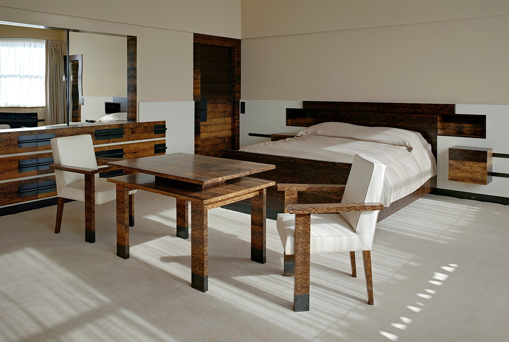

Care after birth, for body and mind.
Aftercare for women, specialised in gentle cupping for C-section scars.
Treatments for the weeks after
For the body
C-section cupping
Soft silicone cups lift the tissue around a healed scar so it can move freely again.
Postpartum massage
Slow work for the belly, lower back, hips and shoulders.
Scar care lesson
Learn the strokes that keep your scar soft at home.
For the mind
Birth story hour
Tell it from start to finish, unhurried, to someone who listens.
Breath and rest
Guided breathing that settles a tired nervous system.
Check-in call
A short call between visits, for the days that feel heavy.

C-section cupping, plainly
A scar goes deeper than skin. Cupping helps the layers glide again.
- When to start
- Once the scar has closed and your doctor agrees, usually six to eight weeks after birth.
- How it feels
- A gentle lift and stretch, at your pace.
- Older scars
- Scars from years ago can still be treated.
- What it may ease
- Pulling, tenderness and the firm ridge of tissue above the scar.
Book your first visit
- Where
- Studio address to be added
- When
- Opening hours to be added